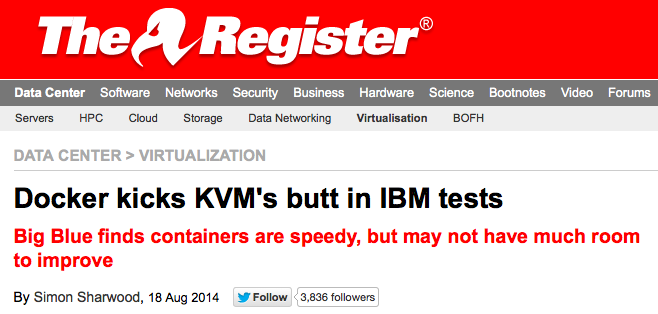
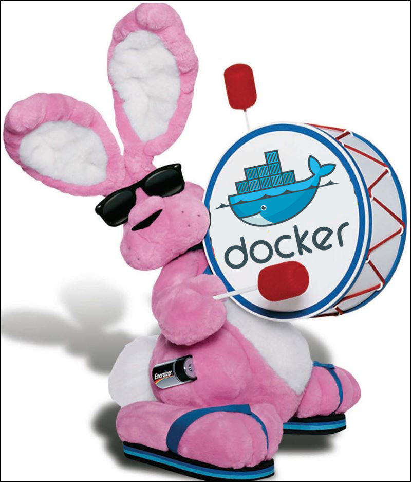
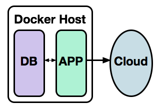
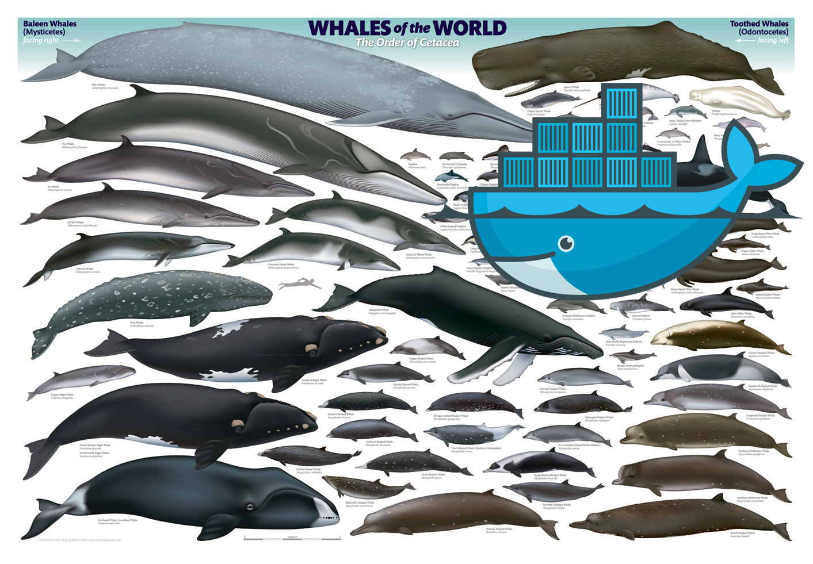
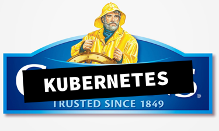
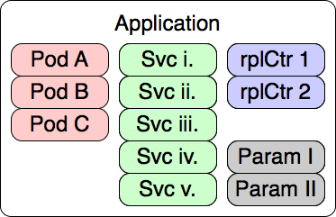
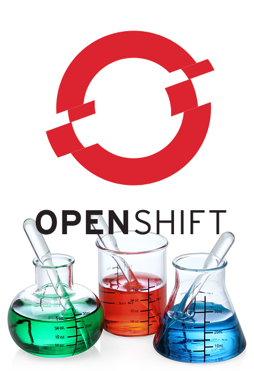
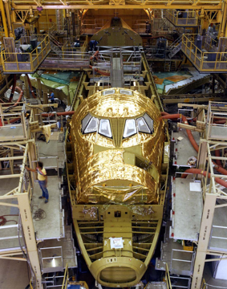

The New PaaS:
Using Docker and Containers to Simplify Your Life and Accelerate Development on AWS
Presented by
N. Harrison Ripps / @nhripps
Steven Pousty / @TheSteve0
Lab Syllabus
|
|
Important Stuff
- Bathrooms
- Breaks
- Questions
Lab Tools
|
Required:
|
Optional:
|
Part 1: What is a "PaaS"?
Cloud Services

Infrastructure-as-a-Service
- Servers in the Cloud
- You build and manage everything
(OS, app servers, DB, application, etc.)

Amazon AWS, Rackspace Cloud, OpenStack
Software-as-a-Service
- Someone else's app, hosted in the cloud
- You are restricted to the features of the application—
You get what they give you.

SalesForce.com, Google Apps, iCloud
Platform-as-a-Service
- Quickly build (or try out) the applications that you need.
- Code applications that can live on a hybrid cloud.
- Leverage the ease, scale and power of the Cloud.

| Code | Deploy | Enjoy |
What can you do with OpenShift?

How Does It Work?

It starts with multi-tenancy via linux containers...
How Does It Work?

...and adds central management with easily scaled deployments
Quick Demo:
OpenShift Now
Create a new PHP app from the command line:
rhc app create newphp -t php-5.4
Enter the new local git repo and modify a file:
cd newphp
vim index.php
Commit the change, push it to the app:
git commit -am "Comment"
git pushSo Why a New PaaS?
- Three years in, we've learned a lot about PaaS
- As more people focus on PaaS, more tools are becoming available
- We want to combine the best user experience in PaaS with the best underlying technologies
Part 2: Docker
What is a Container?
 |
|
Containers vs. VMs

Containers vs. VMs
Layers and UFS
Layers and UFS
- One or more read-only file systems and one read/write file system
- All presented as a single file system via aufs
- Behavior is similar to using a LiveCD
"Data Volume Container": A Docker container with only a read/write file system, either stricly within the container or linked to real storage on the host
Images: More like git than tar
- Images can be pulled from and pushed to a remote registry.
- Images can be versioned and tagged.
- Cartridges can be
diffed to show how they differ from their base images.
Versioning / Tagging
Find the image ID:
$ docker images
REPOSITORY TAG IMAGE ID CREATED VIRTUAL SIZE
nhripps/nodesrv v1 fe809d275af3 18 hours ago 864.9 MB
node latest 32b8e915efd9 3 weeks ago 864.9 MB
centos centos6 b1bd49907d55 5 weeks ago 212.5 MB
centos centos7 b157b77b1a65 5 weeks ago 243.7 MB
centos latest b157b77b1a65 5 weeks ago 243.7 MBCreate the tag:
$ docker tag fe809d275af3 nhripps/nodesrv:latest$ docker images nhripps/nodesrv
REPOSITORY TAG IMAGE ID CREATED VIRTUAL SIZE
nhripps/nodesrv v1 fe809d275af3 18 hours ago 864.9 MB
nhripps/nodesrv latest fe809d275af3 18 hours ago 864.9 MBContainer Operations
Instantiate a Docker container with docker run:
$ docker run -i -t nhripps/centos /bin/bash
bash-4.1# exit
exit
List running and exited docker processes with docker ps:
$ docker ps -l
CONTAINER ID IMAGE COMMAND CREATED STATUS NAMES
7c4ef3596fa5 nhripps/centos:latest "/bin/bash" 49 seconds ago Exited (0) grave_newton
Rejoin containers with docker attach:
$ docker start grave_newton
grave_newton
$ docker attach grave_newton
bash-4.1# exit
exit"Diffing" a Container
Run a Docker image and perform some actions:
$ docker run -i -t --name="add_wget" nhripps/centos /bin/bash
bash-4.1# yum install -y wget
...
bash-4.1# exitRun a diff on the container after it has run:
$ docker diff add_wget
C /.bash_history
C /etc
A /etc/wgetrc
C /tmp
C /usr
C /usr/bin
A /usr/bin/wget
C /usr/share
C /usr/share/doc
A /usr/share/doc/wget-1.12
...Docker Containers as Daemons
A docker container runs until:
- The process inside it exits or
- You stop it with
docker stop <container_name>
Docker Containers as Daemons
Start a container as a detached process with docker run -d:
$ docker run -d nhripps/nginx:base
1aa9f0bd1418f951a590c12ad717ea8af639dd29969ee3f59dfd87da1da23c4e
$ docker ps
CONTAINER ID IMAGE COMMAND PORTS NAMES
1aa9f0bd1418 nhripps/nginx:base "/bin/sh -c '/usr/sb 80/tcp elegant_bell
Use the -P flag to automatically map container ports to the Docker host:
$ docker run -d -P nhripps/nginx:base
1c2e06d8f85e6e034dfd1f7e822b32ed3f4ddf1d5760011d1e84a88a589f50f3
$ docker ps
CONTAINER ID IMAGE COMMAND PORTS NAMES
1c2e06d8f85e nhripps/nginx:base "/bin/sh -c '/usr/sb 0.0.0.0:49153->80/tcp loving_mcleanLinking Containers
|  |
|
Linking Containers
Start a daemon container as normal, but without mapping any ports:
$ docker run -d --name db training/postgres
b4309b7dbbe1f43fd34720c96f496c3453c43ea735731b0888278aa26fe18f96
Now use the --link argument with a new container:
$ docker run -d -P --name web --link db:db training/webapp python app.py
18eeef892d63ea3cb5f1fb3cb61d359284c74b22775a2e72f5af4cca5b35ce59
See how the first container has been mapped to the second:
$ docker ps
CONTAINER ID IMAGE COMMAND PORTS NAMES
18eeef892d63 training/webapp:latest "python app.py" 0.0.0.0:49153->5000/tcp web
b4309b7dbbe1 training/postgres:latest "su postgres -c '/us 5432/tcp db,web/dbDocker: Pros and Cons
|
PROS:
|
CONS:
|
Lab: Get to Know Docker
Part 3: Kubernetes

(Logo concept #1: See, it's like a ship that carries other ships...)
Kubernetes:
"Greek for 'pilot' or 'helmsman'."
Φιλοσοφία Βιοῦ Κυβερνήτης
Philosophia Biou Kubernetes: "Love of wisdom, the guide of life"
"Declarative cluster management for Docker."
Docker Don'ts
- Docker doesn't see beyond a single host
- Docker can't provision related containers as a unit
- Docker doesn't have any capacity for handling mass configuration & deployment.
Solution:
(Logo concept #2)
Kuberenetes Terminology
 |
|
etcd
- Highly available key/value data store
- Built-in clustering support
- RAFT consensus-based algorithm for updates

Minion Daemon:
kubernetes-kubelet

- Primary responsilibity: pod management
- Maintain a record of pod state
- Take instructions from the cluster master
Minion Daemon:
kubernetes-proxy

- The proxy service maps a common port on every minion to relevant pods across the entire cluster
- Relevant pods are chosen by comparing a label on the proxy definition to labels on the running pods
- This mapping of a minion host port to a pod label is called a service
More on Labels

- A label or consists of a key and a value (also called a selector)
- A pod can have any number of labels; each label must have a unique key
- Examples:
service=nginx,environment=prod,tier=frontend
Cluster Management
 |
|
The Kubernetes API
- Minions (docker hosts)
- Pods (docker container configurations)
- Services (port proxy mappings)
- Replication Controllers (replicated, monitored pod deployments)
(Logo concept #3)
controller-manager
and Replication Controllers
|
kubecfg
Set up and manage replication controllers
kubecfg -p 8080:80 run dockerfile/nginx 2 myNginxController
Perform CRUD operations against the RESTful Kubernetes API
kubecfg <-c some/body.[json|yaml]> [options] update pods/pod-abc-123
Requires JSON or YAML configured input for CRUD operations
{
"id": "pulpdb",
"kind": "Pod",
"apiVersion": "v1beta1",
"labels": {
"name": "db"
},
"desiredState": {
"manifest": {
"version": "v1beta1",
"id": "pulp_db",
"containers": [{
"name": "pulp-db",
"image": "markllama/mongodb",
"ports": [{
"containerPort": 27017,
}]
}]
}
}
}Lab: Hands-on With Kubernetes
(Logo concept #4)
Part 4:
Kubernetes Don'ts
- No concept of a complete application.
- No capacity for building and deploying Docker images from source code.
- No lifecycle (CI / staging / production).
- No inherent focus on a user or administrator experience.

Defining an Application
Applications =
Distinct Interconnected Services

- Distinct: App components must be abstracted so that they can evolve independently
- Interconnected: Every component should be easy to build, manage and deploy in concert
Applications in OpenShift 3
|  |
|
Building Applications from Source
Three challenges to consider:
- Getting at the source code? GitHub (and others)
- Driving new builds when the source code changes? Webhooks
- Building new Docker images based on the source code? ...hm.
Build Option #1:
docker-builder
- A docker image that quietly co-opts the host docker's socket
- Pulls down new/updated source code from a Git URL
- Per the app Dockerfile, pulls down base engine images (like ruby, node, golang, etc.) into the host Docker repository
- Uses
docker buildto load and compile the source on top of the base image - Pushes the resulting image into a private, hosted Docker registry somewhere in the cluster
- Quietly fades away into darkness like it was never there.
Build Option #2:
Source-to-Image (sti)
|
Builds in OpenShift 3
|
|
Application Lifecycle:
Integrating with CI and CD through "triggers"

|
Make a platform that is aware of changes:
...so that the entire product lifecycle is |
Lifecycle in OpenShift 3:
The Deployment

|
|
Deployment Trigger Policies
|
Manual 
|
Image change 
|

|
Deployment Strategies
- Not how to handle deployments, but who to handle deployments
- Currently supported: "customPod" (i.e. "hand the task off to a customPod of a specific name.")
- Theoretical alternatives:
- thirdPartyDeployment - job goes to a separate system
- controllerService - job goes to a service in the deployment controller
- conciergeService - Standish be a good fellow and handle this, eh?
New Concepts Summary
- Configurations
- Collections of Kubernetes and OpenShift 3 objects
- Parameterized templates
- Post-processed
configs - Builds
- Where is the code coming from?
- How do we turn it into a Docker image?
- Deployments
- When do we deploy?
- How do we deploy?
- What should the deployment look like?
Lab: Hands-on With OpenShift 3
Part 5: The OpenShift Experience
Top Two Design Goals of OpenShift 3
- Maintain the "30-second Developer Experience"
- Bring on the "30-second Administrator Experience"
|  |
oo-install 3.0
- You pick a server.
oo-installchecks for / installs / starts:- Docker
- Kubernetes
oo-installrunskubecfg run openshift/openshift 1 openshift- There is no step 4.
But really 30 seconds?
Well, how fast is your net connection?
Built for Speed: Project Atomic

|
|
Other Admin Considerations
- Users, Teams and Projects
- A
projectcontrols access to a set of resources - Projects have hard and soft resource limits
- Projects are based on organizational boundaries
- Quota and Usage
- Leverage Kubernetes to get fine-grained resource control
- Performance policies can be specified along many dimensions
Simplify Life, Accelerate Development on AWS
Questions?
Thank You!
Learn More:
- Docker: docker.com
- Kubernetes: github.com/GoogleCloudPlatform/kubernetes
- OpenShift 3: github.com/openshift/origin
Presented by
N. Harrison Ripps / @nhripps
Steven Pousty / @TheSteve0